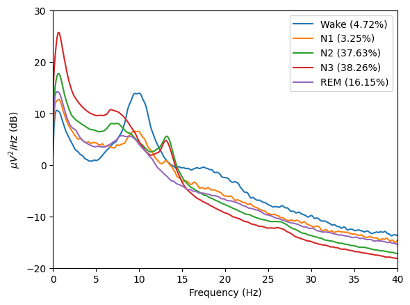
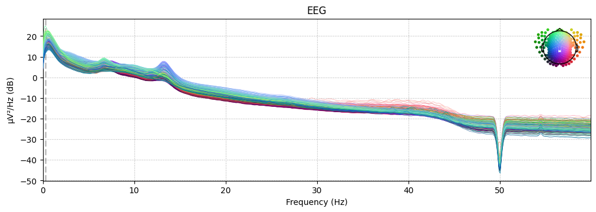
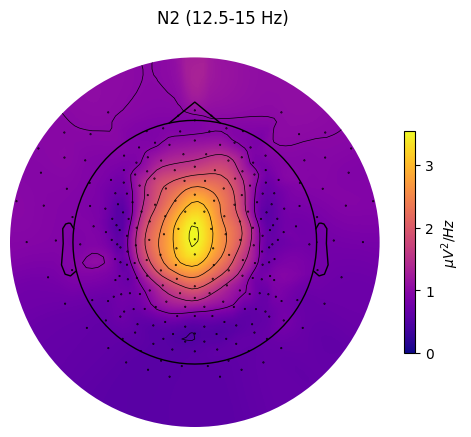
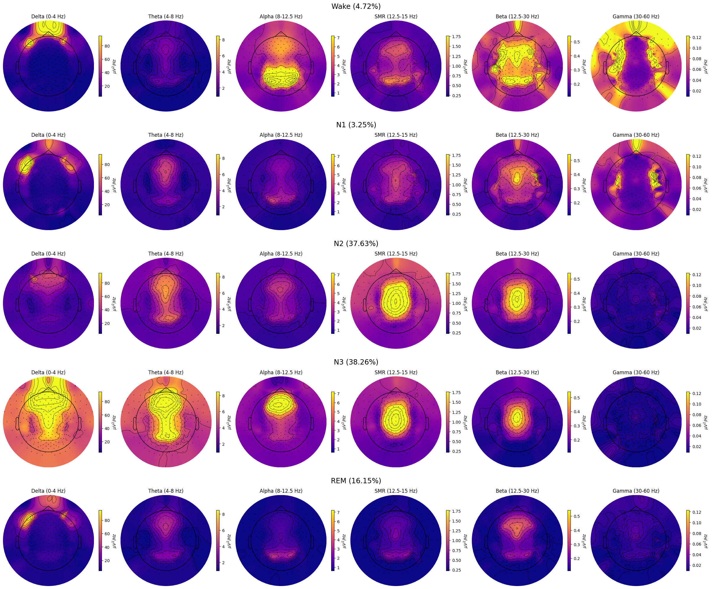

Grand spectral analyses
from sleepeegpy.pipeline import SpectralPipe, GrandSpectralPipe
from os import path, makedirs
If you wish to change the path for output_dir ot input dir, change it below.
If no such folders, they will be created automatically.
Modify subjects_lst to your specific needs (the output folder will contain a folder for each subject)
output_dir = "output_folder" # Output path and name can be changed here
input_dir = "input_files" # input files dir can be changed here
subjects_lst = ["EL3001", "EL3003", "EL3005"]
makedirs(input_dir, exist_ok=True)
makedirs(output_dir, exist_ok=True)
Add required files and data
For each subject, make sure you have folder in the input folder:
Each subject folder must be on their name with the subject name
Modify your eeg file name below. The file can be any format supported by the mne.read_raw() function.
Modify your hypnogram file name below
Make sure the hypno_freq is the right frequency.
For more information about the supported formats, see mne documentation
eeg_file_name = "resampled_raw.fif" # None # add your eeg_path here
hypnogram_filename = "staging.txt" # Hypnogram filename can be changed here (file must be in the input dir)
hypno_freq = 1 # # Hypnogram's sampling frequency (visbrain's hypnograms default to 1)
pipes = [
SpectralPipe(
path_to_eeg=path.join(input_dir, subject, eeg_file_name),
output_dir=path.join(output_dir, subject),
path_to_hypno=path.join(input_dir, subject, hypnogram_filename),
hypno_freq=hypno_freq,
)
for subject in subjects_lst
]
grand_pipe = GrandSpectralPipe(pipes=pipes, output_dir=output_dir)
grand_pipe.compute_psd(
# A dict describing stages and their indices in the hypnogram file.
sleep_stages={"Wake": 0, "N1": 1, "N2": 2, "N3": 3, "REM": 4},
# Rereferencing to apply. Can be list of str channels or "average".
# If None, will not change the reference.
reference="average",
fmin=0, # Lower frequency bound.
fmax=60, # Upper frequency bound.
picks="eeg", # Channels to compute the PSD for.
reject_by_annotation=True, # Whether to reject epochs annotated as BAD.
save=True, # Whether to save the average PSD hdf5 file for each sleep stage.
overwrite=True, # Whether to overwrite hdf5 files if there are any.
# Additional arguments passed to MNE's psd_array_welch:
n_fft=2048,
n_per_seg=1024,
n_overlap=512,
window="hamming",
n_jobs=-1,
verbose=False,
)
grand_pipe.plot_psds(
picks=["E101"],
psd_range=(-20, 30), # Y axis limits
freq_range=(0, 40), # X axis limits
dB=True,
xscale="linear", # Matplotlib xscale. Can be {"linear", "log", "symlog", "logit", ...} or ScaleBase
axis=None,
save=True, # Whether to save the plot as a png file.
)

_ = grand_pipe.psds["N2"].plot(picks="data", exclude="bads", show=False)

You can access the grand average PSD through grand_pipe and the per-subject psds through corresponding pipe objects.
grand_pipe.psds["REM"].get_data(), pipes[0].psds["REM"].get_data()
(array([[4.19018951e-11, 1.91439310e-10, 3.15607608e-10, ...,
7.29004202e-15, 7.01101295e-15, 6.99948348e-15],
[3.21142011e-11, 1.45298876e-10, 2.41224532e-10, ...,
3.50307783e-15, 3.43583349e-15, 3.41955302e-15],
[1.69450658e-11, 7.47489230e-11, 1.24996995e-10, ...,
4.06656085e-15, 3.98604701e-15, 3.84453986e-15],
...,
[7.70641073e-12, 3.08046271e-11, 5.01781103e-11, ...,
5.17841426e-15, 5.22048068e-15, 5.36141795e-15],
[3.49606698e-12, 1.37125151e-11, 2.27727129e-11, ...,
3.53776577e-15, 3.56650048e-15, 3.70910281e-15],
[3.94406383e-12, 1.52977802e-11, 2.57909123e-11, ...,
1.05993990e-14, 1.03174952e-14, 1.02331459e-14]]),
array([[1.22825923e-10, 5.64282553e-10, 9.27330330e-10, ...,
2.18596172e-14, 2.10231310e-14, 2.09880110e-14],
[9.33710790e-11, 4.25464163e-10, 7.03254730e-10, ...,
1.04966507e-14, 1.02957499e-14, 1.02461873e-14],
[4.75357321e-11, 2.12307993e-10, 3.52217229e-10, ...,
1.21855086e-14, 1.19450184e-14, 1.15195385e-14],
...,
[2.17465580e-11, 8.76725338e-11, 1.41179264e-10, ...,
1.55279620e-14, 1.56543278e-14, 1.60770042e-14],
[9.15607103e-12, 3.65680735e-11, 5.94520398e-11, ...,
1.06062714e-14, 1.06926111e-14, 1.11203106e-14],
[1.05419886e-11, 4.17059906e-11, 6.89800066e-11, ...,
3.17821049e-14, 3.09359689e-14, 3.06834732e-14]]))
grand_pipe.plot_topomap(
stage="N2", # Stage to plot topomap for.
band={"SMR": (12.5, 15)}, # Band to plot topomap for.
# Should contain at least index of the provided "stage".
dB=False, # Whether to transform PSD to dB/Hz
axis=None, # Whether to plot on provided matplotlib axis.
save=True, # Whether to save the plot as a file.
topomap_args=dict(cmap="plasma"), # Arguments passed to mne.viz.plot_topomap().
cbar_args=None, # Arguments passed to plt.colorbar().
)

grand_pipe.plot_topomap_collage(
# Bands to plot topomaps for.
bands={
"Delta": (0, 4),
"Theta": (4, 8),
"Alpha": (8, 12.5),
"SMR": (12.5, 15),
"Beta": (12.5, 30),
"Gamma": (30, 60),
},
# Tuple of strs or "all", e.g., ("N1", "REM") or "all" (plots all "sleep_stages").
stages_to_plot="all",
dB=False, # Whether to transform PSD to dB/Hz.
low_percentile=5, # Set min color value by percentile of the band data.
high_percentile=95, # Set max color value by percentile of the band data.
fig=None, # Instance of plt.Figure, a new fig will be created if None.
save=True, # Whether to save the plot as a file.
topomap_args=dict(cmap="plasma"), # Arguments passed to mne.viz.plot_topomap().
cbar_args=None, # Arguments passed to plt.colorbar().
)

grand_pipe.parametrize(
picks=[
"E101"
], # Channels to use, if multiple channels are provided, their PSDs will be averaged.
freq_range=[0.5, 40], # Range of frequencies to parametrize.
# Whether to average psds over channels.
# If False will be averaged over subjects.
average_ch=False,
)
Running FOOOFGroup across 3 power spectra.
Running FOOOFGroup across 3 power spectra.
Running FOOOFGroup across 3 power spectra.
Running FOOOFGroup across 3 power spectra.
Running FOOOFGroup across 3 power spectra.
grand_pipe.fooofs["N2"].report()
Running FOOOFGroup across 3 power spectra.
==================================================================================================
FOOOF - GROUP RESULTS
Number of power spectra in the Group: 3
The model was run on the frequency range 0 - 40 Hz
Frequency Resolution is 0.12 Hz
Power spectra were fit without a knee.
Aperiodic Fit Values:
Exponents - Min: 2.041, Max: 2.177, Mean: 2.111
In total 12 peaks were extracted from the group
Goodness of fit metrics:
R2s - Min: 0.992, Max: 0.997, Mean: 0.995
Errors - Min: 0.038, Max: 0.062, Mean: 0.049
==================================================================================================
grand_pipe.fooofs["N2"].get_fooof(ind=0).report()
==================================================================================================
FOOOF - POWER SPECTRUM MODEL
The model was run on the frequency range 0 - 40 Hz
Frequency Resolution is 0.12 Hz
Aperiodic Parameters (offset, exponent):
-10.1661, 2.1774
4 peaks were found:
CF: 7.44, PW: 1.055, BW: 3.31
CF: 10.47, PW: 0.616, BW: 1.45
CF: 13.24, PW: 0.933, BW: 2.30
CF: 15.62, PW: 0.321, BW: 8.51
Goodness of fit metrics:
R^2 of model fit is 0.9963
Error of the fit is 0.0472
==================================================================================================
from fooof.analysis import get_band_peak_fg
smr_peaks = get_band_peak_fg(grand_pipe.fooofs["N2"], band=[12.5, 15])
smr_peaks
array([[13.23758589, 0.93305307, 2.30304344],
[12.52734355, 0.94395269, 5.75804993],
[13.43673981, 1.36222484, 1.45597284]])